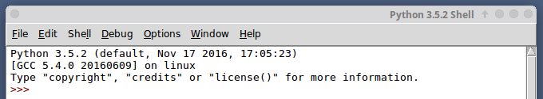

Programmer, c'est créer des programmes (suite d'ordres donnés à l'ordinateur) ! Un ordinateur sans programme ne sait rien faire. Il existe différents langages qui permettent de programmer un ordinateur, mais le seul directement utilisable par le processeur est le langage machine (suite de 1 et de 0), aussi appelé binaire. Aujourd'hui (presque) plus personne ne programme en binaire (trop compliqué).
Les informaticiens utilisent des instructions (mots souvent en anglais) en lieu et place de la suite de 0 et de 1. Ces instructions, une fois écrites par le programmeur, sont « traduites » en langage machine. Un programme spécialisé assure cette traduction. Ce système de traduction s'appellera interpréteur ou bien compilateur, suivant la méthode utilisée pour effectuer la traduction.
Il existe 2 grandes familles de langages de programmation :
Cette année, nous allons apprendre les bases de la programmation en utilisant un langage nommé Python (langage de haut niveau).
Vous avez deux possibilités :
Nous utiliserons ci-dessous l'éditeur de texte IDLE, mais il en existe bien d'autres (spyder, pycharm,...)
Une fois IDLE lancé, vous devriez obtenir quelque chose qui ressemble à cela :
Dans le menu File, choisissez New Window (ou, selon la version, New file), une fenêtre apparaît.
Traditionnellement, les "apprentis programmeurs" commencent leur "carrière" en écrivant un programme qui permet d'afficher à l'écran le message "Hello World !". Nous n'allons pas déroger à cette tradition. En Python, il suffit d'une "instruction" pour afficher ce message (notez bien que selon le langage utilisé cela peut-être plus complexe).
Dans la fenêtre qui vient de s'ouvrir, saisissez l'instruction suivante :
print("hello world !")
puis appuyez sur la touche F5 du clavier (ou dans le menu "Run", choisissez "Run Module")
IDLE va vous demander d'enregistrer le programme, enregistrez-le dans un dossier qui vous servira de dossier de travail.
Vous devez voir le message hello world ! apparaître dans la seconde fenêtre
Bravo, vous venez d'écrire votre premier programme !
Notez qu'il est possible d'utiliser '...' à la place de "..." autour du texte à afficher.
print('hello world !')
Après avoir ouvert votre navigateur internet favori, tapez l'adresse suivante dans la barre d'adresse de ce dernier :
http://pythonfiddle.com/Dans la fenêtre principale, saisissez l'instruction suivante :
print("hello world !")
cliquez ensuite sur le bouton "Run" (en haut à gauche)
Si tout s'est bien passé vous devriez avoir le message "Hello World !" qui s'affiche dans une fenêtre qui se situe en bas de l'écran.
En vous créant un compte sur le site pythonfiddle.com (c'est gratuit), vous aurez la possibilité de sauvegarder vos programmes.
En utilisant l'outil de votre choix (IDLE ou le site pythonfiddle.com), essayez d'écrire un programme qui affichera votre prénom à l'écran.